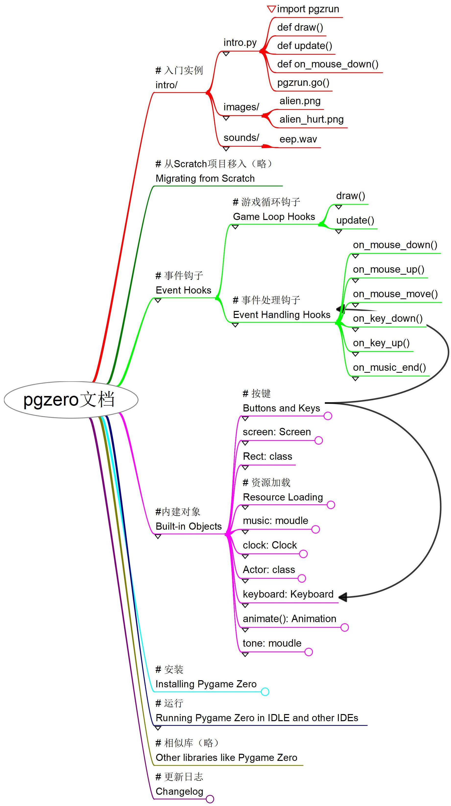

Pygame Zero文档的思维导图和入门实例
我建了个“Pygame Zero与Python入门”QQ群(482015823)，交流成人、儿童通过Pygame Zero学习Python
我认为Python + Pygame Zero + Thonny是最好的少儿编程入门技术路线。（关于编辑器，可参考《初学python，有哪些编辑器推荐》。） 今天把Pygame Zero v1.2的文档，结合源码分析，整理成思维导图和入门实例，看起来真的很简单。 又梳理API的详细用法，整理成一个“一文通”的示例。
Python vs Scratch#
这一年多少儿编程教育兴起，Scratch大火，机构赶紧圈钱，孩子确实喜欢，父母愉快入坑。 但Scratch不是实用语言，而是乐高式的玩具语言，主要好处/目标是让孩子容易理解，降低难度，激发兴趣。
但我比较认同，学习要尽量接近真实生活情景，学真的，真的学。也就说，学编程就尽可能学主流的编程语言。 这几年人工智能技术大发展，Python因此几乎成了第一位的语言。实际上，多年来，它不仅在软件工程师中得到广泛使用，也是各行业通用的专家语言，就是说，不管孩子以后做什么，都可能用得着。所以中小学课堂上多半是教Python，美国多年前就是这样，中国这两年也开始跟上。
人生苦短，早学Python。等到上老年兴趣班的时候才发现Python的好处，那就太遗憾了，像这位——

下面来看看pgzero(Pygame Zero正式库名)。Thonny得空再讲。
本文附件#
- 文档思维导图：pgzero_doc.7z。Freeplane格式，包含官方文档的完整内容，以及分析源码获得的一些信息。还没有翻译。
- 入门实例和详细的API用法示例：pgzero_intro.7z
文档结构是这样的#

这是入门实例#
看起来真的很容易。
import time # 导入time模块
import pgzrun # 导入pgzero的模块运行工具pgzrun
WIDTH = 800 # 画布宽
HEIGHT = 800 # 画布高
alien = Actor('alien') # 用images文件夹中的图像'alien'生成演员
alien.pos = 0, 400 # 定位
def draw(): # 绘制画面（显示钩子）
screen.clear() # 清屏
screen.fill((128, 0, 128)) # 填色
alien.draw() # 绘制演员
def update(): # 更新数据（显示钩子）
alien.left += 2 # 右移
if alien.left > WIDTH: # 如果超出屏幕右边界
alien.right = 0 # 重新放到屏幕左侧外
def on_mouse_down(pos): # 当鼠标按下（事件钩子）
if alien.collidepoint(pos): # 如果与鼠标位置碰撞
time.sleep(0.1) # 暂停
set_alien_hurt() # 调用函数
else:
print("You missed me!") # 打印消息
def set_alien_hurt(): # 外星人被击中后的动作
alien.image = 'alien_hurt' # 换用图像'alien_hurt'
sounds.eep.play() # 播放sounds文件夹中的声音文件'eep'
clock.schedule_unique(set_alien_normal, 1.0) # 用定时器调用一次函数
def set_alien_normal(): # 外星人复原
alien.image = 'alien' # 换用原图
pgzrun.go() # 用pgzrun运行本脚本
这是详细的pgzero API用法示例#
API一文通。
"""pgzero(Pygame Zero) API的基本用法示例
by 黄复雄, xiiiGame.com, aahuaang@Gmail.com
** 发布时可能省略了中文字体`fonts\simkai.ttf`，请自行补充！**
"""
# 导入本脚本要使用的模块
import time
import itertools
# 导入pgzero的模块运行工具pgzrun，与模块最后的`pgzrun.go()`配合使用
# 效果相当于在命令行中运行`pgzrun intro.py`
# Mu和Thonny的`Pygame Zero模式`运行，即是执行`pgzrun intro.py`命令
import pgzrun
# pgzrun将自动引入
# * 类: Actor, Rect, ZRect
# * 对象: images, keyboard, screen, sounds
# * 枚举对象: keymods, keys, mouse
# * 函数: animate(), exit()
# * 模块: clock, music, pgzrun, tone
# 因此下面这些导入不是必须的，但显示导入可以方便编辑器补全、提示
from pgzero.actor import Actor
from pgzero.rect import Rect, ZRect
from pgzero.loaders import sounds, images
from pgzero import music, tone
from pgzero.clock import clock
from pgzero.builtins import keymods # 似乎没有作用
# keymods属性有: LSHIFT, RSHIFT, SHIFT, LCTRL, RCTRL, CTRL, LALT, RALT, ALT, LMETA, RMETA, META, NUM, CAPS, MODE
# 可检测mod值，LCtrl: 64, RCtrl: 128, LAlt: 256, RAlt: 512, LShift: 1, RShift: 1, Capital: 8192
from pgzero.constants import mouse
from pgzero.animation import animate
from pgzero.keyboard import keys, Keyboard
from pgzero.screen import Screen
keyboard: Keyboard # 类型标注
screen: Screen # 类型标注
# 生成演员（Actor）实例alien
# Actor(image, pos=POS_TOPLEFT, anchor=ANCHOR_CENTER, **kwargs)
alien = Actor('alien')
# 演员定位，可以使用这些属性：
# bottom, bottom_left, bottom_right, center, left, mid_bottom, mid_left,
# mid_right, mid_top, pos, right, top, top_left, top_right, x, y
# 另有属性，锚点: anchor, 角度: angle
# 另有方法，测量相对距离: distance_to(), 测量相对角度: angle_to()
alien.pos = (0, 200)
alien2 = Actor('alien')
TITLE = 'api用法' # 窗口标题
# 画布宽高
WIDTH = 800
HEIGHT = 400
def draw():
""" 绘制（显示钩子）;
如果定义了update()，或者发出了定时器（clock）事件、输入事件，就会重绘画布;
不要在这里更新数据，定义动画;
"""
screen.clear() # 屏幕清理，其后默认填充黑色
screen.fill((128, 0, 128)) # 填充颜色
screen.blit('alien_hurt',(WIDTH/2, 0)) # 绘制图像
screen.draw.line((0,0),(WIDTH, HEIGHT),(0,128,128)) # 画线
rect = Rect((0, 0), (200, 200)) # 画方形
rect.center = WIDTH / 2, HEIGHT / 2
screen.draw.rect(rect, (128,128,128))
# screen.draw.filled_rect(rect, color) # 画填充的方形
# screen.draw.circle(pos, radius, color) # 画圆形
screen.draw.filled_circle((WIDTH/2, HEIGHT/2), 100, (0,0,200)) # 画填充的圆形
# 画文本
screen.draw.text(
"Python\n和\nPygame Zero\n游戏学习", # 要显示的文本
midtop=(WIDTH / 2, 10), # 定位，关键字：
# top left bottom right
# topleft bottomleft topright bottomright
# midtop midleft midbottom midright
# center centerx centery
fontname="simkai", # 请保证存在字体： fonts\simkai.ttf
fontsize=64,
align='center', # 对齐方式：left, center, right
color="#000000", # 颜色
# background="gray", # 背景色
alpha=0.3, # 透明度
gcolor="#0000ff", # 渐变色
owidth=2, # 外框
ocolor='red', # 外框色
# shadow=(1.0,1.0), # 阴影投射偏置，会覆盖owidth，被alpha覆盖
# scolor="blue", # 阴影颜色
)
# 画适配方框的文本
# screen.draw.textbox(*args, **kwargs)
# 画文本
screen.draw.text(
"用空白键停止/播放音乐",
midtop=(WIDTH / 2, HEIGHT - 30),
fontname="simkai",
alpha=0.7
)
# 画演员
alien.draw()
alien2.draw()
# screen.surface: Surface # 代表屏幕缓存
def update():
"""
更新（显示钩子）;
游戏的逐步逻辑，每秒重复60次;
update()基于帧，间距不稳定；update(dt)基于实际时间，消耗大;
"""
alien.left += 2
if alien.left > WIDTH:
alien.right = 0
if alien.colliderect(alien2): # 两个Actor之间的碰撞检测
print("collide")
# 合成音，'E4'指第4个八度的E，'A#5'指第5个八度的A升，'Bb3'指第3个八度的B降
beep = tone.create('A3', 0.5)
def on_mouse_down(pos):
""" 当鼠标按下（事件钩子）"""
if alien.collidepoint(pos):
sounds.eep.play() # sounds, images 可以用`.file_name`取得Surface或Sound实例
alien.image = 'alien_hurt'
time.sleep(0.1)
alien.image = 'alien'
set_alien_hurt()
move_alien2()
else:
print("You missed me!")
# beep.stop() # 快速点击会导致杂音，不停止则有变音
beep.play()
# tone.play('A3', 0.5) # 也可以不生成实例
def on_mouse_move(pos, rel, buttons):
if mouse.LEFT in buttons and alien.collidepoint(pos):
# 当鼠标拖动
alien.pos = pos
def set_alien_hurt():
""" 外星人被击中后的动作"""
alien.image = 'alien_hurt'
sounds.eep.play()
clock.schedule_unique(set_alien_normal, 1.0)
# clock的方法还有: schedule(), schedule_interval(), unschedule()
def set_alien_normal():
""" 外星人复原"""
alien.image = 'alien'
# alien2动画
# 位置数据
offset_x = alien2.width / 2
offset_y = alien2.height / 2
BLOCK_POSITIONS = [
(WIDTH - offset_x, offset_y),
(WIDTH - offset_x, HEIGHT - offset_y),
(offset_x, HEIGHT - offset_y),
(offset_x, offset_y),
]
alien2_positions = itertools.cycle(BLOCK_POSITIONS)
def move_alien2():
"""Move the ship to the target."""
animate(
alien2,
tween='accel_decel', # 可选: linear, accelerate, decelerate, accel_decel, end_elastic,
# start_elastic, both_elastic, bounce_end, bounce_start, bounce_start_end
pos=next(alien2_positions),
duration=1,
# on_finished=next_ship_target, # 结束时回调
)
# animate()会返回一个动画实例，可以使用方法: stop(complete=False)，属性: running, on_finished
# 控制背景音乐
music.set_volume(0.3)
music.play("handel")
is_pausing = False
def on_key_down(key, mod):
if key == keys.SPACE:
global is_pausing
if is_pausing:
music.unpause()
is_pausing = False
else:
music.pause()
is_pausing = True
# music的方法还有: play_once(name), queue(name), stop(), is_playing(), fadeout(duration), get_volume(),
# 键盘和鼠标事件钩子还有：
# on_key_up()
# on_mouse_up()
# on_music_end()
pgzrun.go() # 运行本脚本
使用pygame方法的示例#
PygameZero比较简单，需要复杂功能又不想自己实现则可以直接用pygame。
比如画椭圆：
def draw():
pygame.draw.ellipse(screen.surface,'red',pygame.Rect(0,0,50,50), 1) # screen.surface是PygameZero的屏幕纹理
本处原有的资源列表已经移到PygameZero资源